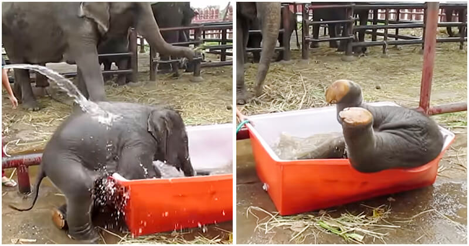

Baby Elephant Has A Great Time Struggling In Bathtub

The elephant is probably one of the most adorable animals in the whole world – they are sweet, they are calm, they are friendly, they are social, and they are affectionate towards humans. Being around elephants is always a fun experience that you’ll remember.
Let’s take a look at this cute video of a Thai baby elephant enjoying just what he loves – taking a bath. If you have a soft spot for animals, the little boy surely will brighten up your day.
Uploaded by a tourist named Claus Jørgensen, the video starts when the not-so-small boy plunges head-first into the tub excitedly while his mother cheering him up behind, making everyone around couldn’t help but laugh out loud. The baby elephant has a little trouble making himself comfortable in the tiny tub, but he seems to love the water so much.
Screenshot, Claus JørgensenScreenshot, Claus Jørgensen
The young mammal then manages to get out, but the next time he gets into the tub isn’t any easier, it’s even more miserable – he falls.
But after a quick glance at his mother nearby, the boy stands up immediately. He goes out again and determines on getting into the bathtub – in the right way this time.
Screenshot, Claus JørgensenScreenshot, Claus Jørgensen
The third time is still a struggle, but he makes it! The elephant has a lot of fun kicking his legs, making the water splash everywhere.
Screenshot, Claus JørgensenScreenshot, Claus Jørgensen
After a short break, the baby elephant dives into the orange bathtub again and this time, he is helped by two blond tourists. However, our little boy decides he doesn’t need help. He takes the hose, and runs away hilariously.
Screenshot, Claus JørgensenScreenshot, Claus Jørgensen
Could this elephant be any cuter? Let’s take a look at our playful boy:
To learn more about their life, check out the official website of the organization – Elephant Stay.